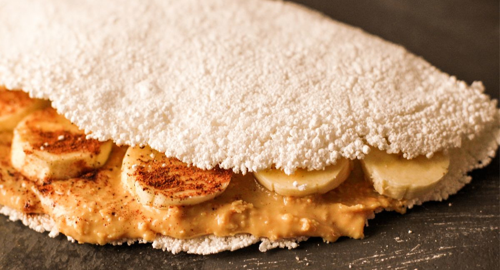

Homepage
Vitor's Delicious Banana Tapioca Breakfast Crepe

Image source: Receitinhas
This is a delicious and healthy breakfast idea. It requires no cooking and is super quick to make. To keep it simple, use hydrated tapioca starch -
It's very common in Brazil. If you're in another country, check Brazilian or Latin markets.
For the best flavor, use high-quality natural peanut butter. Remember, peanut butter only needs one ingredient: peanuts!
Ingredients
For a healthier breakfast, I like to add a mix of seeds to the crepe filling. It also adds a nice texture. I recommend preparing the mixture in
a separate glass jar - you can use it later with granolas, yogurt or açaí bowls, and more. To make it, simply combine equal parts of sunflower seeds, flaxseeds,
chia seeds, and sesame seeds.
- 4 tablespoons of hydrated tapioca starch (approximately 100 g)
- 1 large chopped banana
- 1 tablespoon of peanut butter
- 1 tablespoon of sliced oats
- 1 tablespoon of seed mix
- 1 teaspoon of honey
- 1 teaspoon of cinnamon
Steps
- Preheat a medium-sized frying pan on the stove for a minute.
- Add the tapioca starch. I like to to this directly from the bag, slowly spreading it evenly across surface of the pan. There's no need to
grease the pan, even if it's not non-sticky.
- Before adding the filling, check if the tapioca starch is spread evenly. If not, use a spatula to finish the job.
- Add the filling: start with the banana, then add the dry ingredients - this way, your spoon won't get dirty, and you'll only need one.
Finish with the peanut butter, then drizzle the honey on top.
- Fold the crepe in half and serve.
- Eat the crepe right away while it's still fresh - otherwise, it can quickly become soft.
Recipe source: myself